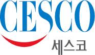
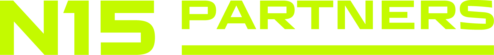

DATA INTELLIGENCE · AI ENGINEERING
흩어진 데이터를 움직이는 의사결정으로.
데이터캐스트는 데이터 수집, AI 분석, 시각화와 서비스 개발을 하나의 흐름으로 연결합니다. 숫자를 쌓는 데서 멈추지 않고, 비즈니스가 바로 사용할 수 있는 시스템을 만듭니다.
LIVE PIPELINE
SYSTEM READY
- 01COLLECTmulti-source
- 02NORMALIZEdata quality
- 03ANALYZEAI / NLP
- 04ACTIVATEdecision ready
PROJECT SCOPEGLOBAL
DATA MODELIVE + BATCH
SELECTED EXPERIENCE
산업의 언어를 이해하고,
데이터의 구조를 설계합니다.
ENTERPRISE · RESEARCH · STARTUP
자동차, 환경위생, 식품, 금융, 교육, 스타트업까지. 산업별 맥락을 이해하고 리서치, 데이터, 제품을 하나의 실행 체계로 연결해 왔습니다.




01 / ABOUT
필요한 것은
숫자가 아닌 메시지.
데이터캐스트는 비즈니스 전략과 데이터 분석, 소프트웨어 엔지니어링을 함께 이해합니다.
그래서 분석 보고서에서 끝나지 않습니다. 고객의 일하는 방식 안에서 계속 움직이는 도구와 서비스를 설계합니다.
우리가 일하는 방식 →WHAT WE BUILD
데이터를 넘어,
실행하는 시스템까지.
수집과 분석을 넘어 AI 에이전트, 성장 전략, 현장형 제품 개발까지. 데이터와 AI를 실제 비즈니스 실행으로 전환합니다.
C / 01
Data Collection
& Pipeline Engineering
리뷰, 댓글, 플랫폼, API 등 흩어진 외부 데이터를 지속적으로 수집하고, 분석과 AI가 바로 사용할 수 있는 신뢰도 높은 파이프라인으로 운영합니다.
- 리뷰 / 댓글
- Web & API
- ETL / ELT
- Data Quality
C / 02
Agentic AI
& AX Systems
LLM과 도메인 지식을 연결한 RAG부터, 도구를 활용해 업무를 완수하는 AI Agent까지. 평가·관측·보안이 내장된 Agent Harness로 조직의 AX를 구현합니다.
- LLM
- AI Agent
- RAG
- Agent Harness
- AX
C / 03
Growth Research
& Strategy
시장·고객·경쟁 데이터를 성장 가설로 바꾸고, 무엇을 왜 먼저 실행할지까지 설계합니다. 보고서를 넘어 실제 의사결정과 사업 실행을 움직입니다.
- Business Growth
- Marketing
- Strategy
- Decision Intelligence
C / 04
Data Product
& FDE
고객 현장에 깊이 들어가 문제 정의부터 프로토타입, 배포, 운영까지 함께합니다. GCP·AWS 기반의 데이터·AI 제품을 실제 워크플로우 안에서 빠르게 구현하고 개선합니다.
- Forward Deployed
- GCP
- AWS
- Product Engineering
02 / FEATURED WORK
CASE ARCHIVE · 06 SYSTEMS
데이터가 실제로
작동한 장면들.
리서치에서 수집 엔진, AI 분석, 운영 제품까지. 서로 다른 산업의 문제를 실제로 사용되는 시스템으로 전환한 사례입니다.
01 / 06
현대자동차그룹 · 글로벌 리뷰 인텔리전스 플랫폼
03 / TECHNOLOGY & IP
2 REGISTERED PATENTS · TEXT → VISION
텍스트와 이미지에서
검색 가능한 신호로.
리뷰 문장에서 감성과 주제를 읽고, 오브젝트 이미지에서 색·소재·마감을 식별합니다. 텍스트와 비전을 구조화해 비교·검색·의사결정에 활용합니다.
REGISTERED IP / KRSELECT · AUTO / 05 SEC
CMF VISION LABMODEL / 2906780
PART_01
PART_02
OBJECTLOUNGE CHAIR98.7%
COLORWARM TAUPE0.94
MATERIALTEXTILE0.89
FINISHSOFT MATTE0.91
SIMILARITY SCORE92.4
SEGMENT→CLASSIFY→COMPARE→RETRIEVE
HOW WE WORK
문제에 맞춰 설계하고,
운영까지 책임집니다.
작은 검증으로 시작해 실제 운영 환경에서 신뢰할 수 있는 시스템으로 확장합니다.
- 01
Define
비즈니스 질문과 성공 기준을 먼저 합의합니다.
- 02
Prototype
데이터와 기술의 가능성을 빠르게 검증합니다.
- 03
Build
품질·보안·확장성을 고려해 제품화합니다.
- 04
Operate
모니터링과 개선을 통해 계속 작동하게 합니다.
START A PROJECT
당신의 데이터가
다음 결정을 움직이게.
admin@datacast.kr↗
프로젝트의 배경과 해결하고 싶은 문제를 간단히 알려주세요.